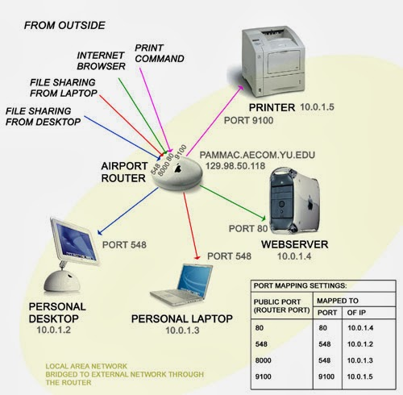

HTML LEARNER
NAVIGTION
Introduction To Web Development | Internet Working
HOW Does Internet Work
Principle 1: The Need to Share Information
The most fundamental truth is that we have information on one computer (Computer A) and we want it to be on another computer (Computer B). These computers are not in the same room.
How do we solve this? The simplest, most primitive way is to physically carry the information (e.g., on a USB stick). This works, but it's slow and doesn't scale. We need a direct, electronic connection.
So, we run a cable (like an ethernet cable or a fiber optic line) between Computer A and Computer B. We can now send electrical signals or pulses of light down this cable. We can agree on a simple code: a high-voltage signal means "1," and a low-voltage signal means "0."
We have just created the most basic form of a network: a direct link. We can now send bits (1s and 0s) between two computers.
Principle 2: The Problem of Scale
This works for two computers. But what if we have three computers (A, B, and C) and they all need to talk to each other? We would need a cable from A to B, from B to C, and from A to C. For four computers, we'd need six cables. For 100 computers, we'd need 4,950 cables.
This is a failure of scale. Connecting every machine to every other machine directly is physically impossible.
The logical solution is to have a central device. Every computer connects to this one central point (let's call it a Switch). When Computer A wants to talk to Computer C, it sends the message to the switch, and the switch forwards it only to Computer C.
We have just invented a Local Network. A group of computers in close proximity (like an office or a home) can now communicate efficiently.
Principle 3: The Problem of Connecting Networks
Now, our office has a local network. Another office across town also has its own local network. How does a computer on our network talk to a computer on their network?
We face the same scaling problem. We can't run a wire from every computer in our office to every computer in theirs.
The logical solution is to connect the networks themselves. We need a special, dedicated computer that is connected to our network and also connected to their network. Its only job is to pass messages, or "route" traffic, from one network to the other. Let's call this device a Router.
Now, if we want to connect to a third network, we just connect our router to their router. Suddenly, we can build a massive, sprawling web by connecting networks to other networks.
This is the fundamental truth of the Internet. The Internet is a "network of networks." It is not one giant cloud; it is millions of private and public local networks all connected by these special routing devices.
Principle 4: The Problem of Finding Anyone (Addressing)
We have built a global web of interconnected networks. If I'm on my computer in my office, how do I send a message to a specific server in another country? There are millions of computers. I need a unique address for every single device.
This gives rise to the need for a universal addressing system. Just like the postal service needs a unique street address for every house in the world, our network of networks needs a unique address for every connected device.
This is the reason the IP Address (Internet Protocol Address) exists. It's a unique label (e.g.,
142.250.184.142) assigned to each device. When a router sees a message, it looks at the
destination IP address and says, "Based on this address, I don't need to send it to the network on my left; I
need to send it to the network on my right to get it one step closer to its final destination." Routers don't
know the full path; they just know the next best "hop" to send the message on.
Principle 5: The Problem of Reliability and Fairness
If I want to send a large file, like a 1-hour video, it is a huge stream of data. If I try to send it all at once:
- I would completely monopolize the connection, and no one else could send anything until my video was done.
- If even a single bit of information gets corrupted during the transfer, the entire file is ruined, and I have to start over from the beginning.
This is inefficient and unreliable. The logical solution is to break the large file into many thousands of small, numbered pieces. Let's call them Packets.
Each packet is like a tiny envelope. It contains:
- A small piece of the data (a "payload").
- The destination IP address (where it's going).
- The sender's IP address (so they can reply).
- A number, so the receiving computer knows how to reassemble them in the correct order ("Packet 1 of 5,000," "Packet 2 of 5,000," etc.).
These packets can travel independently across the internet, sometimes even taking different routes. The receiving computer gathers all the packets, checks if any are missing (and requests them again if they are), and reassembles them in the correct order to recreate the original file.
This system of rules for addressing, breaking down, sending, and reassembling data is called a Protocol. The main one used on the internet is TCP/IP (Transmission Control Protocol / Internet Protocol).
Summary from First Principles
- Problem: Share data between two computers. Solution: A direct physical link.
- Problem: Connect many computers efficiently. Solution: A local network with a central switch.
- Problem: Connect many networks efficiently. Solution: An internetwork connected by routers.
- Problem: Find a specific computer in this massive web. Solution: A universal IP Address for every device.
- Problem: Send data reliably and fairly without errors. Solution: TCP/IP Protocol with packets.
IP Address
An IPv4 (Internet Protocol version 4) address is the classic IP address format everyone is used to seeing.
Structure: It's a 32-bit number. To make it readable for humans, we divide it into four 8-bit sections, and write each section as a decimal number from 0 to 255.
Example: 172.217.16.142
The Big Problem (The Why): A 32-bit number means there's a hard limit on the total number of possible addresses: 2^32, which is about 4.3 billion.
When the internet was designed, 4.3 billion seemed like an infinite number. But with the explosion of laptops, phones, servers, smart watches, and even smart refrigerators, we quickly realized we would run out. This scarcity is the single most important reason we have public and private IPs.
Public IP Address
- Analogy: The company's main, public phone number.
- Uniqueness: Must be globally unique.
- Purpose: To be reachable from anywhere in the world.
- Assignment: Assigned to you by your Internet Service Provider (ISP).
- Who has one? Your home router, Google server, Netflix server.
Private IP Address
- Analogy: The employee's private, internal extension.
- Uniqueness: It only needs to be unique on your local network.
- Reserved Ranges:
- 10.0.0.0 – 10.255.255.255 (Large corporations)
- 172.16.0.0 – 172.31.255.255 (Medium-sized networks)
- 192.168.0.0 – 192.168.255.255 (Most common for homes)
IPv6
IPv6 (Internet Protocol version 6) was introduced for address exhaustion. It uses 128-bit addresses instead of 32-bit.
The number of possible IPv6 addresses is 2^128, which is roughly:
340,000,000,000,000,000,000,000,000,000,000,000,000 (340 undecillion).
Format: Uses hexadecimal instead of decimal and written using colons.
Example: 2001:0db8:85a3:0000:0000:8a2e:0370:7334MAC Address
A MAC (Media Access Control) Address is a unique, permanent serial number burned into every network-capable hardware.
Format: It is a 48-bit number, represented in hex:
- Colon-Separated:
3C:22:FB:A3:B4:C5 - Hyphen-Separated:
3C-22-FB-A3-B4-C5 - Period-Separated:
3c22.fba3.b4c5 - No Separators:
3C22FBA3B4C5
How to Find MAC Address
Windows
ipconfig /all
getmac /vmacOS
ifconfigPort Number
Port numbers are numerical identifiers (0-65535) that identify services on a device. They are 16-bit unsigned integers.
Categories:
Well-Known Ports (0 – 1023)
Strictly managed by IANA, require admin privileges to use. Examples:
- 21: FTP
- 22: SSH
- 25: SMTP
- 53: DNS
- 80: HTTP
- 443: HTTPS
Registered Ports (1024 – 49151)
Reserved for specific apps, commonly used by developers. Examples:
- 3000: React / Node.js Dev Servers
- 3306: MySQL
- 5432: PostgreSQL
- 27017: MongoDB
- 8080: Alternate HTTP
Dynamic / Private / Ephemeral Ports (49152 – 65535)
These are used temporarily on the client side when initiating outgoing connections.
DNS (Domain Name System)
DNS is the global addressing system that converts human-readable domain names into IP addresses.
Step 1: Checking the Local Cache
- Browser Cache
- Operating System Cache
- Router Cache
Step 2: The Recursive Resolver
If not found locally, the query goes to a Recursive Resolver (from ISP, or Google 8.8.8.8, or Cloudflare 1.1.1.1).
Step 3: The Hierarchical Search

- Root Servers: Direct to TLD servers.
- TLD Servers: Direct to authoritative servers.
- Authoritative Servers: Provide the final IP.
Step 4: The Journey Back
Answer is cached and returned step by step back to your browser.
Step 5: The Final Connection
Your browser connects to IP address (e.g., 142.250.72.206) on port (e.g., 443 for HTTPS) and
fetches the content.
© 2025 My Project. Built Puerly With HTML5